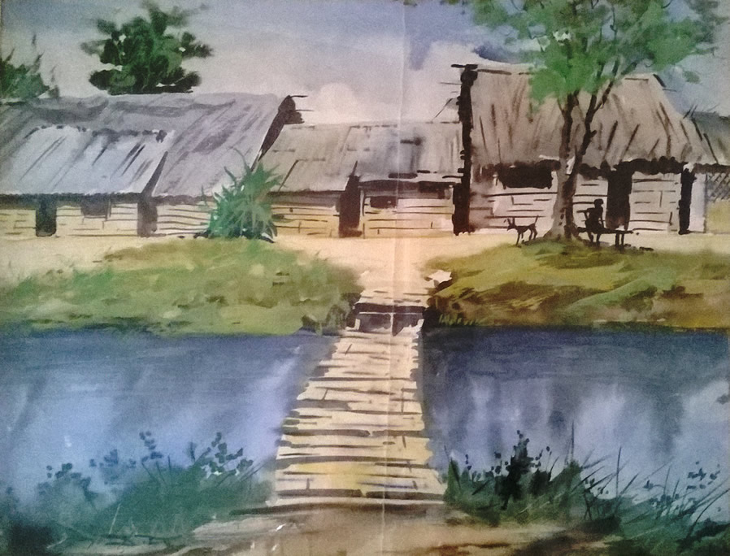
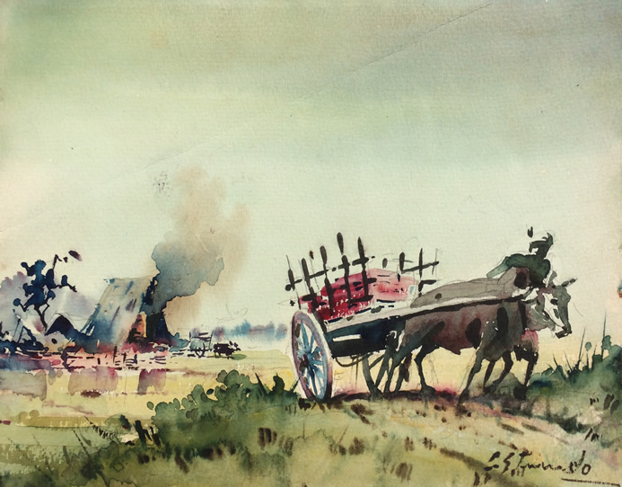
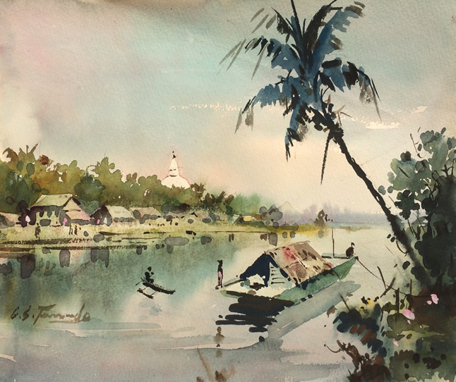
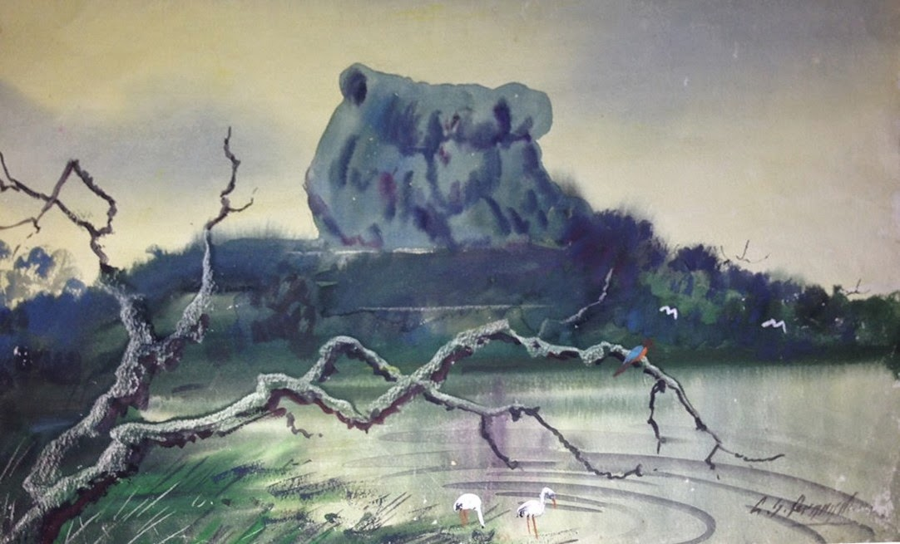

ජී. එස්. ප්රනාන්දු (1904-1990)
- වර්ෂ 1904 දී බෙන්තර සුද්දාගොඩ උපත ලැබූ ජී. එස්. හෙවත් ගම්වාරි සරත් ප්රනාන්දු දිය සායම් චිත්ර කලාවේ ශිල්පීය ප්රවණතා පෙන්නුම් කළ ප්රකට චිත්ර ශිල්පියෙකි.
- රිචඩ් හෙන්රිකස් යටතේ චිත්ර කලාව පිළිබඳ අධ්යාපනය ලැබූ ඔහු, පළමුව බිතු සිතුවම් කලාවට ප්රවේශ වු චිත්ර ශිල්පියෙක් ද වේ.
- පසුකාලීනව ජී.එස් ප්රනාන්දු ශිල්පියා හට එම්. සාර්ලිස් හා මුදලිඳු අමරසේකර වැනි ශිල්පීන්ගෙන් ද චිත්ර ශිල්පය හැදැරීම නිසා දිය සායම් මාධ්ය පිළිබඳ අනන්යතාවක් සහිත නිර්මාණ කිරීමට හැකි විය.
- කාටුන් චිත්ර කලාව පිළිබඳ ප්රවීණතාවක් පෙන් වූ ජී. එස්. ප්රනාන්දු ලංකාවේ ප්රථම චිත්ර කතාව නිර්මාණය කරනු ලැබූ ශිල්පියා ද වේ.
- වෙළඳ චිත්ර ශිල්පියකු ලෙස ඔහු පෝස්ටර්, ලේබල්, පොත් පිටකවර ද නිර්මාණය කිරීමට දායක වී ඇත.
- දිය සායම් මාධ්ය ශිල්ප ක්රමය අනුව ඔහු විසින් නිර්මාණය කරන ලද චිත්ර, යුරෝපීය ශාස්ත්රාලයීය චිත්ර කලා ආභාසය සහිත ව, ඔහුට ම ආවේණික ස්වභාවිකවාදී චිත්ර කලා ශෛලියක් අනුව නිර්මාණය කර තිබීම දැකිය හැකි ය.
- ඔහුගේ දියසායම් නිර්මාණ සඳහා විශේෂයෙන්ම යුරෝපීය භුමිදර්ශන සිතුවම් වල ආභාසය ලැබී ඇත.
- ශ්රී ලාංකේය පරිසර ස්වභාවය ඉතා අලංකාර ලෙස මතු කිරීම ඔහුගේ නිර්මාණවල කැපී පෙනෙන ලක්ෂණයක් වේ.
- ජී. එස්. ප්රනාන්දු විසින් නිර්මාණය කරන ලද පහත දැක්වෙන දිය සායම් මාධ්ය නිර්මාණ විශිෂ්ට නිර්මාණ වශයෙන් සැලකේ.
- උළු පෝරණුව
- ගඩලාදෙණිය
- ජී.එස් ප්රනාන්දුගේ දියසායම් මාධ්ය නිර්මාණවල ශෛලීය ලක්ෂණ හා චිත්ර මූලිකාංග සංරචන ක්රම වේද පොදුවේ මෙසේ හඳුනාගත හැකි ය.
- චිත්රයේ ගැඹුර හා පර්යාලෝක ලක්ෂණ නිරූපණය
- මිනිස් ඉරියව් ලාලිත්යයෙන් හා හැඟීම් ප්රකාශනයෙන් යුතු වීම
- ත්රිමාන ලක්ෂණ සහිත ව දීප්තිමත් වර්ණ මාලාවක් භාවිත කිරීම
උළු පෝරණුව
- ජාතික කලාභවනේ නිත්ය ප්රදර්ශනයට තබා ඇති මෙම සිතුවම යුරෝපීය ස්වභාවිකවාදී ශෛලිය දැක්වෙන නිර්මාණයකි.
- කඩදාසි මත දිය සායම් මාධ්යයෙන් කරන ලද නිර්මාණයකි.
- චිත්රයේ දක්වන උළු පෝරණුව හා අවට පරිසරය චිත්රණය කිරීමේ දී දීප්තිමත් වර්ණ මාලාවක් ත්රිමාන ලක්ෂණ සහිත ව දියසායම් පදාස ක්රමයට ප්රකාශනාත්මක ව දක්වා ඇත.
- තලය මත රූප සංරචනය කිරීමේ දී පෙරබිම, මැද බිම හා පසුබිම මත රූප පිහිටුවමින් චිත්රයේ ගැඹුර හා පර්යාලෝක ලක්ෂණ සහිත ව නිරූපණය කර ඇත.
- මෙම නිර්මාණ සඳහා ස්වභාවිකවාදී ශෛලීය ලක්ෂණ හා යුරෝපීය භුමිදර්ශන සිතුවම් ම්වල ආභාසය ලැබී ඇති බව දැකිය හැකි ය.
ගඩලාදෙණිය
- කොළඹ ජාතික කලාභවනේ නිත්ය ප්රදර්ශනයට තබා ඇති නිර්මාණයකි.
- යුරෝපීය ස්වභාවිකවාදී ශෛලිය දැක්වෙන මෙම සිතුවම දිය සායම් මාධ්යයේ නිර්මාණයකි.
- ශාස්ත්රාලයීය චිත්ර කලාවේ සංරචන සිද්ධාන්ත ලක්ෂණ වන ගැඹුර නිරූපණය කරන පර්යාලෝක ලක්ෂණ හා ත්රිමාන ලක්ෂණ භාවිතය මෙම නිර්මාණයේ ද දැකිය හැකි ය.
- තලය මත රූප සංරචනය කිරීමේ දී පෙරබිම, මැද බිම හා පසුබිම මත රූප පිහිටුවමින් චිත්රයේ ගැඹුර හා පර්යාලෝක ලක්ෂණ නිරූපණය කර ඇත.
- දීප්තිමත් වර්ණ මාලාවක් ත්රිමාන ලක්ෂණ සහිත ව දියසායම් පදාස ක්රමයට භාවිත කර ඇත.
- මෙම නිර්මාණ සඳහා ද ස්වභාවිකවාදී ශෛලීය ලක්ෂණ හා යුරෝපීය භුමිදර්ශන සිතුවම් වල ආභාසය ලැබී ඇති බව දැකිය හැකි ය.



